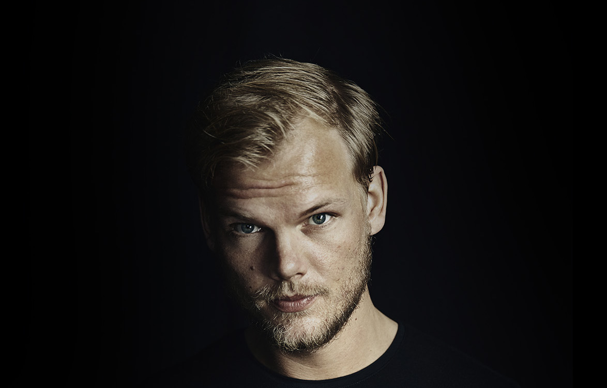
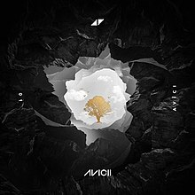

Tim Bergling
Story

Avicii was born on September 8, 1989, in Stockholm, Sweden, to Klas Bergling and Anki Lidén. His mother was a small-time actor who had appeared in more than 50 Swedish films and TV series. He was one of the four children of his parents and was heavily influenced by his older brother, who also happened to be a musician and DJ. Avicii started making music at the age of 16. Within a few months, he started posting his music on various online electronic music forums. He remixed a number of classic songs in his early years. His work reached the right people, and he soon started getting approached by well-known music labels. His music resembled that of the popular group ‘Swedish House Mafia,’ and that helped him earn a huge fan following.assing a large fan following, and became one of the most popular DJs of this generation.
Contribution
His initial successes got Avicii acquainted with the right people in the music industry. By 2011, he had already finished working on his breakthrough single, ‘Levels.’ The song included vocals from the famous gospel-inspired 60s song ‘Something’s got a Hold on Me’ by Etta James. ‘Levels’ made waves nationally and internationally and established Avicii in the mainstream music arena. The song made its place among the top 10 hits of many European countries and also made waves across the US.
In early 2013, Avicii released ‘Wake Me Up,’ one of his most meaningful and most successful singles to date. The song topped the charts in more than 20 countries across the world and is known as his most successful single. In mid-2013, he announced in an interview that his debut studio album, ‘True,’ would be available for sale by the end of that year. He also gave a glimpse into the album by saying that he had heavily used the new genre “folktronica,” a blend of folk music and electronic music.
Wake Me Up’ became the fastest-selling single in the UK by the end of July. The single also made a record for staying on the top of ‘Billboard’s ‘Dance/Electronic’ music chart for 14 weeks. Avicii released more singles from the album in the following months, only increasing the curiosity about his album.
Albums

True

Stories
- 
Avīci